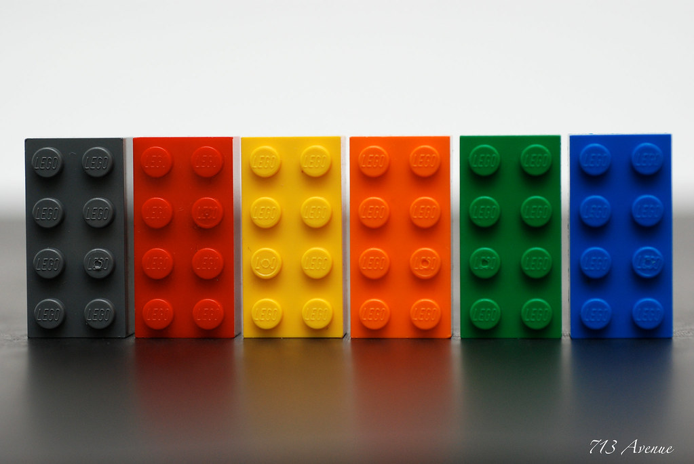

Дата проведения: 02.03.2023 г. 10:00
Детский мини-технопарк «Квантум» СП «ЦВР» ГБОУ СОШ № 17 г. Сызрани вновь открыл свои двери. 02.03.2023 г. учащиеся окунуться в поиски нужного цвета. В рамках данного мастер-класса ребята познакомятся с датчиком цвета, его программированием. Соберут робота «Движущаяся база» используя конструктор LEGO Educatijn SPIKE, усовершенствовав его датчиком цвета.